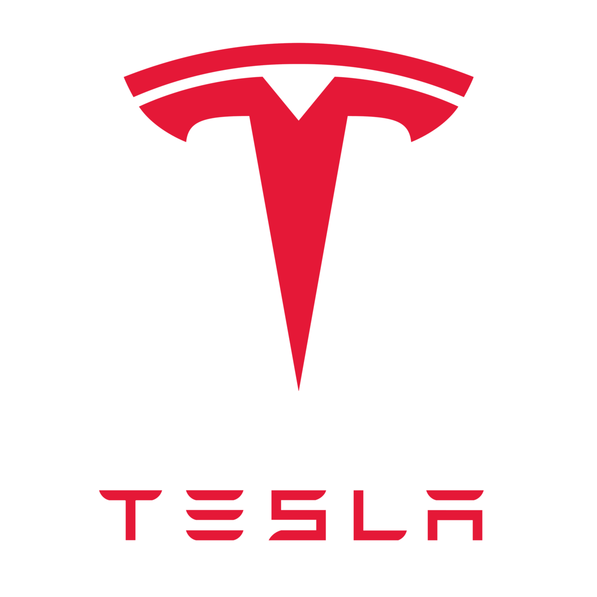
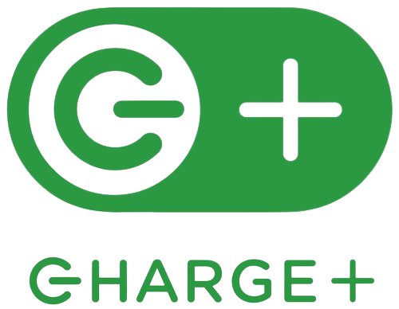
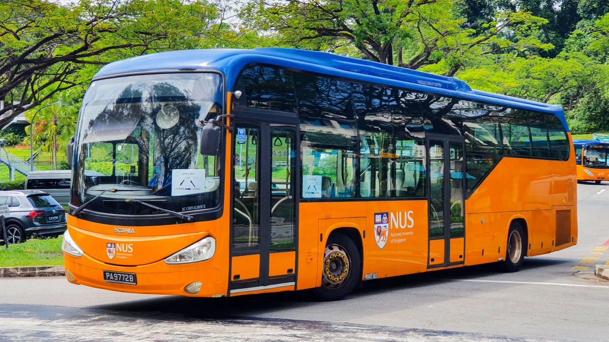
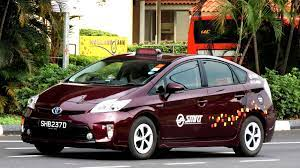
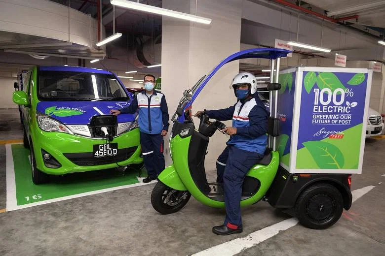

There has been a lot of hype in recent years regarding renewable energy,
with activists such as Greta Thunberg spearheading protests against practices that are harmful to the environment,
and governments pledging to turn away from fossil fuels to utilise more renewable sources of energy.
Closer to home, the Singapore government has also launched the SG Green Plan 2030 in 2021,
with a set of targets to turn Singapore into a cleaner and greener country.
But as the stipulated deadline looms, I aim to find out what is Singapore's progress in making those targets a reality.
Renewable, Clean and Green Energy
Aren't they the same?
Well, there is a difference actually.
Clean Energy
Green Energy
Renewable Energy
Clean energy produces electricity without emissions.
Green energy comes from totally natural sources, which have low or no environmental impact in their creation or use.
Energy derived from natural sources that are replenished at a higher rate than they are consumed
Do they sound similar? Well, a key difference is that while most green energy sources are also renewable,
not all renewable energy sources are considered entirely green.
Take hydropower for example. Hydropower involves the use of water to generate electricity, and is thus considered a form of renewable energy source.
However, many have argued that hydropower cannot be considered a form green energy due to the industrialisation and large amounts of deforestation
needed to build the massive hydro dams.
Some examples of green energy sources that are also sources of renewable energy include:
Solar energy
Wind energy
Geothermal energy
Singapore's Four Switches
Just as how we have the four National taps in Singapore,
we also harness four Switches that regulate our energy supply, while promoting energy efficiency.
Click on each switch to find out more!
Natural Gas
Natural Gas
Natural gas is a fossil fuel. Similar to other fossil fuels such as coal and oil, natural gas forms from plants,
animals, and microorganisms that lived on earth millions of years ago.
About 95% of Singapore’s electricity is generated using natural gas, the cleanest form of fossil fuel.
Solar Panels
Solar Panels
Currently holds the top spot as the most promising renewable energy source in the near term for Singapore
Constraints: due to Singapore’s scarce land area, the amount of solar energy that can be harnessed is limited.
Even as we work towards achieving our 2030 solar target of 2GWp, it will constitute only around 3% of the country’s total projected electricity demand in 2030.
Regional Power Grids
Regional Power Grids
Importing electricity from regional countries can help accelerate the development of renewable energy projects in the region,
bringing economic growth and increasing access to renewable energy.
This method helps diversify our energy sources away from natural gas, improving Singapore's energy resilience.
Obtaining regional power grids are mainly done through bilateral cooperation or regional initiatives.
Lower Carbon Alternatives
Lower Carbon Alternatives
Singapore is constantly exploring emerging low-carbon solutions. Lower carbon alternatives include
novel sources such as hydrogen and carbon capture, utilisation and storage (CCUS).
Depending on technological developments and the development of other energy sources,
hydrogen could supply up to half of our power needs by 2050.
This would then help reduce Singapore's carbon footprint in the longer term.
SG Green Plan 2030
The Singapore Green Plan 2030, or the Green Plan, is a nation-wide movement to advance Singapore’s national agenda on sustainable development.
Increase solar energy deployment by five-fold to at least 2GWp
1.5 GWp by 2025
Cleaner-energy Vehicles
8 EV-Ready Towns with chargers at all HDB carparks by 2025
60,000 charging points nationwide by 2030, including 40,000 in public carparks and 20,000 in - private premises
Singapore's energy consumption from various energy sources over the years
Shining a Light on Sustainability
Singapore is a relatively small country, with neither land space for windmills, nor a river system with fast flowing water.
According to the National Climate Change Secretariat (NCCS),
Commercial wind turbines operate at wind speeds of around above 4.5m/s
In stark contrast to Singapore, where the average wind speed is only about 2m/s
Being a trade-reliant country, most of the sea space is used for ports, anchorage and shipping lanes
This results in insufficient space for tidal power generation
This crosses out both wind power and hydropower respectively, leaving us with solar power.
So, how have we been leveraging the one thing we have truly unlimited access to - the sun?
How would you like to see this data?
As seen from the graphs above, the number of solar panels installed in Singapore has been on the rise,
from 30 in 2008 to 5,455 in the first quarter of 2022. In the same vein, the capacity of solar panels have also increased,
from 0.4MWp in 2008 to 670MWp in the first quarter of 2022.
As solar panels continue to be installed all across Singapore, from HDB rooftops to our local water bodies,
such as at Tengeh Reservoir, we can expect to see an even greater expansion in the amount and use of solar
panels in the years to come.
Singapore's Drive Towards Electric Vehicles
As of March 2023, there are around 2,000 charging points available in Singapore,
including both public and private charging stations.
This means that there is still a long way to go to reach the ambitious target of 60,000 charging points by 2030.
However, with the government's continued efforts and support,
it is hoped that Singapore will be able to achieve this target and further promote the adoption
of electric vehicles in the country.
So, who are the big players in the EV scene in Singapore?

Tesla is a well-known American electric vehicle company that has a presence in Singapore,
albeit relatively small compared to other countries.
Tesla began selling its electric vehicles in Singapore in 2017, and it currently offers several models,
including the Model S, Model X, and Model 3.
Singapore-based electric car-sharing service
Offers a fleet of electric vehicles for short-term rental
Launched in 2017, in partnership with the Land Transport Authority (LTA) and Economic Development Board (EDB),
as part of efforts to make Singapore’s transport system more sustainable
Currently, the company has more than 1,000 electric cars in its fleet
BlueSG cars are 100% electric, and can run up to 200 km on a single charge

Operates a network of electric vehicle (EV) charging stations across the country
One of the largest EV charging network operators in Singapore
Also offers a mobile application that allows electric vehicle owners to locate charging stations,
reserve charging slots, and make payments through the app
EV charging company based in Los Angeles, under Shell Group
Established in 2008, and has since expanded its operations globally, including Singapore
Provides subscription-based packages that allows you to pay a monthly fee over a fixed term
rather than the full upfront cost at the beginning
Offers a cloud-based platform that allows charging station owners and operators to remotely
manage their charging infrastructure
Car-sharing service that operates a fleet of electric and hybrid vehicles in Singapore
Users can rent the vehicles on an hourly or daily basis through the TribeCar app
currently has more than 1,300 vehicles across the country
Electric cars are not the only vehicles that we see!
Grab, a ride-hailing company, launched GrabWheels in 2019, which is an electric scooter-sharing service
Users can rent electric scooters through the Grab app and use them to travel short distances
Have you spotted any of these electric vehicles or charging points in your vicinity?
Well, these are just the tip of the iceberg in Singapore’s EV scene.
But other than for private use, where can EVs be seen in the public sector?
Here are some examples of how EVs will be or are being used on a large scale in Singapore!

ComfortDelGro has begun operating the new electric bus fleet in NUS,
replacing the old fleet of shuttle buses that ran on petrol. Hurray to quieter bus rides!

SMRT has plans to replace its entire taxi fleet with electric taxis.

SingPost has begun its pilot testing on the use of three-wheel electric scooters and vans to deliver mail.
According to the Straits Times, it has plans to replace all of its lighter delivery vehicles with their electric counterparts by 2026.
Lastly, let's take a look at the electric vehicle population in Singapore over the years.
Click on the legend to remove the specific dataset from the graph and view each vehicle type separately!
From here, we can see that the number of electric vehicles used by Singaporeans has increased exponentially,
although they still constitute a small proportion of the total motor vehicles used in Singapore.
Yet, we can continue to expect that with an even greater increase in awareness of the benefits of electric vehicles,
as well as the proliferation of electric vehicle suppliers with the continued support from the government,
these numbers are bound to increase even more.
Conclusion
We began by asking the question, "How has Singapore progressed in transitioning to renewable energy,
and how close is it to achieving its SGP2030 targets?"
After addressing common misconceptions in the different types of energy, exploring Singapore's main energy sources and delving into
Singapore's current consumption patterns over the years, Singapore still seems to be a far cry from achieving its SGP2030 goals
at the current moment.
Yet, not all is lost, as we’ve seen some huge leaps in the renewable energy sector,
especially with regards to solar energy and electric vehicles.
For a land scarce city-state as Singapore, the targets may still seem ambitiously high for now,
but we can expect to see greater steps taken by the government and relevant sectors as they sign more
leases in the coming years to enable improvements in renewable energy infrastructure.
Feel like you've learnt a thing or two from this data story? Go back up to the top and reattempt the quiz section again,
if you haven't done so already!
References
This data story would not have come through if not for the many sources that have been made readily available for us.
Below are the sources used!
Electric vehicle journey in 2021. (2021, December 29). The Straits Times. https://www.straitstimes.com/singapore/transport/singapores-electric-vehicle-journey-in-2021
What is green energy? (n.d.). National Grid. https://www.nationalgrid.com/stories/energy-explained/what-is-green-energy
Energy reset. (n.d.). Green Plan. https://www.greenplan.gov.sg/key-focus-areas/energy-reset/
Renewable Energy Singapore. (n.d.). EnergyTracker Asia. https://energytracker.asia/renewable-energy-singapore/
What sources does the country get its energy from? (n.d.). Our World in Data. https://ourworldindata.org/energy/country/singapore#what-sources-does-the-country-get-its-energy-from
Singapore's approach to alternative energy. (n.d.). National Climate Change Secretariat. https://tinyurl.com/yjandedj
Graphics:
Flaticon. (n.d.). https://www.flaticon.com/
Data:
Singapore Energy Statistics 2021. (n.d.). Energy Market Authority. https://www.ema.gov.sg/singapore-energy-statistics/Ch06/index6
SES Public 2022. (n.d.). Energy Market Authority. https://www.ema.gov.sg/assets/stat_table/SES_Public_2022.xlsx
Singapore now has over 3,000 public EV charging points with more to be installed, says country’s LTA. (2022, September 5). Paul Tan's Automotive News. https://paultan.org/2022/09/05/singapore-now-has-over-3000-public-ev-charging-points-with-more-to-be-installed-says-countrys-lta/
MVP by Fuel Type. (2022). Land Transport Authority. https://tinyurl.com/2p9dryy8
Coding guide:
W3Schools. (n.d.). https://www.w3schools.com/
Simple Steps Code. (n.d.). JavaScript Quiz Tutorial. Retrieved from https://simplestepscode.com/javascript-quiz-tutorial/
Grasshopper. (n.d.). Grasshopper: Learn to Code for Free. Retrieved from https://learn.grasshopper.app/